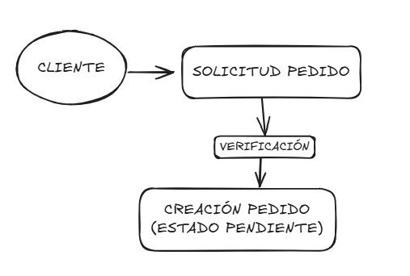
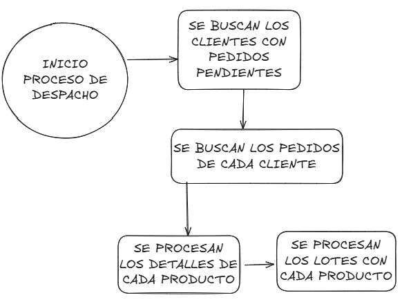
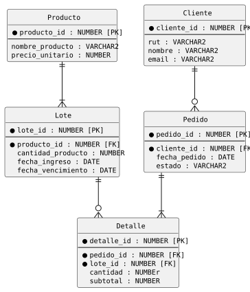

Introducción
Descripción del proyecto
Alcance
Tecnologías utilizadas
Tipos de datos compuestos
Desarrollo de Bloques PL/SQL con Cursores Explícitos Complejos
- Cursor Explícito: Objeto definido en la sección DECLARE para consultar y procesar conjuntos de filas de manera secuencial mediante instrucciones OPEN, FETCH y CLOSE.
- Cursores Simples vs. Complejos: Los simples operan sobre una sola tabla base. Los complejos integran múltiples uniones, funciones de agregación o condiciones relacionales avanzadas.
- Cursores con Parámetros: Consultas con variables de entrada integradas en su declaración (CURSOR c_nombre(p_parametro) IS ...), que permiten reutilizar la estructura filtrando datos de forma dinámica.
- Bucles Anidados: Estructuras iterativas donde un cursor externo suministra parámetros a un cursor interno.
Aplicación de funcionalidades
Problema identificado: En el sistema de la distribuidora de alimentos, al procesar la salida de mercadería asociada a un conjunto de clientes activos, es necesario validar y actualizar de manera secuencial el stock disponible en la tabla lote frente a las cantidades solicitadas en la tabla detalle de cada pedido

Solución establecida:
- Se declara un cursor explícito complejo principal para extraer los clientes que poseen pedidos en estado pendiente.
- Se declara un segundo cursor explícito con parámetros para extraer los pedidos asociados a cada cliente.
- Se declara un tercer cursor que recorre los detalles del pedido y cruza con la tabla lote y restar la cantidad requerida.

Integración de Control de Excepciones
- Predefinidas: Errores estándar con nombre asignado para capturar fallos comunes sin declaración manual.
- Definidas por el Usuario: Variables de tipo EXCEPTION declaradas y lanzadas con RAISE para reglas de negocio específicas.
Aplicación de funcionalidades
Problema identificado:Durante la ejecución de los bucles anidados que procesan los lotes y pedidos, pueden ocurrir dos tipos de incidentes críticos:
- Que el cursor intente descontar stock de un lote_id cuya fecha de vencimiento ya expiró
- Que una consulta por pedido_id o cliente_id no devuelva registros en un punto intermedio, arrojando el error estándar NO_DATA_FOUND
Solución establecida:
- Se define una excepción personalizada llamada ex_lote_vencido.
- Dentro del bucle de procesamiento de lotes, se evalúa si fecha_lote < SYSDATE. De cumplirse, se ejecuta RAISE ex_lote_vencido.
- La sección EXCEPTION atrapa ex_lote_vencido
Procedimientos, Funciones, Paquetes y Triggers
Resumen
Anexos
Código completo
CREATE TABLE producto (
producto_id NUMBER GENERATED BY DEFAULT AS IDENTITY PRIMARY KEY,
nombre_producto VARCHAR2(100) NOT NULL,
precio_unitario NUMBER(10, 2) NOT NULL
);
CREATE TABLE lote (
lote_id NUMBER GENERATED BY DEFAULT AS IDENTITY PRIMARY KEY,
producto_id NUMBER NOT NULL,
cantidad_producto NUMBER NOT NULL,
fecha_ingreso DATE DEFAULT SYSDATE NOT NULL,
fecha_vencimiento DATE NOT NULL,
CONSTRAINT fk_lote_producto FOREIGN KEY (producto_id) REFERENCES producto(producto_id)
);
CREATE TABLE cliente (
cliente_id NUMBER GENERATED BY DEFAULT AS IDENTITY PRIMARY KEY,
rut VARCHAR2(12) NOT NULL UNIQUE,
nombre VARCHAR2(100) NOT NULL,
email VARCHAR2(100)
);
CREATE TABLE pedido (
pedido_id NUMBER GENERATED BY DEFAULT AS IDENTITY PRIMARY KEY,
cliente_id NUMBER NOT NULL,
fecha_pedido DATE DEFAULT SYSDATE NOT NULL,
estado VARCHAR2(30) NOT NULL,
CONSTRAINT fk_pedido_cliente FOREIGN KEY (cliente_id) REFERENCES cliente(cliente_id)
);
CREATE TABLE detalle (
detalle_id NUMBER GENERATED BY DEFAULT AS IDENTITY PRIMARY KEY,
pedido_id NUMBER NOT NULL,
lote_id NUMBER NOT NULL,
cantidad NUMBER NOT NULL,
subtotal NUMBER(12, 2) NOT NULL,
CONSTRAINT fk_detalle_pedido FOREIGN KEY (pedido_id) REFERENCES pedido(pedido_id),
CONSTRAINT fk_detalle_lote FOREIGN KEY (lote_id) REFERENCES lote(lote_id)
);
SET SERVEROUTPUT ON;
DECLARE
ex_lote_vencido EXCEPTION;
-- 1. Clientes con pedidos pendientes
CURSOR c_clientes IS
SELECT DISTINCT c.cliente_id, c.nombre
FROM cliente c
JOIN pedido p ON c.cliente_id = p.cliente_id
WHERE p.estado = 'PENDIENTE';
-- 2. Pedidos de un cliente específico
CURSOR c_pedidos (p_cliente_id NUMBER) IS
SELECT pedido_id
FROM pedido
WHERE cliente_id = p_cliente_id
AND estado = 'PENDIENTE';
-- 3. Detalles y lotes asociados a un pedido
CURSOR c_detalles (p_pedido_id NUMBER) IS
SELECT d.detalle_id, d.lote_id, l.fecha_vencimiento
FROM detalle d
JOIN lote l ON d.lote_id = l.lote_id
WHERE d.pedido_id = p_pedido_id;
BEGIN
-- Recorre clientes obtenidos
FOR reg_cliente IN c_clientes LOOP
DBMS_OUTPUT.PUT_LINE('Cliente: ' || reg_cliente.nombre);
-- Recorre pedidos del cliente
FOR reg_pedido IN c_pedidos(reg_cliente.cliente_id) LOOP
DBMS_OUTPUT.PUT_LINE(' -> Pedido ID: ' || reg_pedido.pedido_id);
-- Recorre detalles y verifica lotes
FOR reg_det IN c_detalles(reg_pedido.pedido_id) LOOP
-- Evaluar fecha de vencimiento
IF reg_det.fecha_vencimiento < SYSDATE THEN
RAISE ex_lote_vencido;
END IF;
END LOOP;
END LOOP;
END LOOP;
EXCEPTION
WHEN ex_lote_vencido THEN
DBMS_OUTPUT.PUT_LINE('Se intentó procesar un lote con fecha de vencimiento expirada.');
WHEN OTHERS THEN
DBMS_OUTPUT.PUT_LINE('Error no controlado: ' || SQLERRM);
END;
/
Diagramas y Modelos
